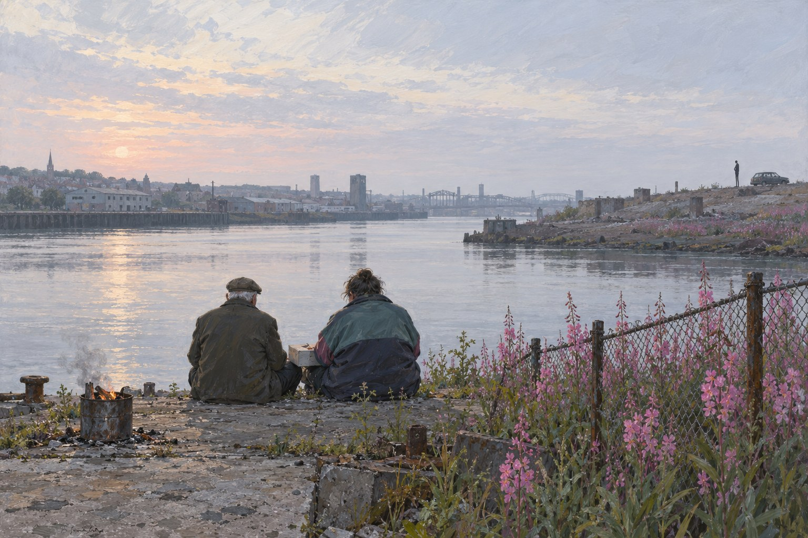

Тайн

Глава первая. Туда и обратно
Я начну рассказ о своих приключениях с одного утра в начале июня 1751 года от Рождества Христова, когда я в последний раз вынул ключ из двери отцовского дома.
— Роберт Льюис Стивенсон, «Похищенный» (1886)
Коробку принёс на кухню сам Паттл. В пятницу, десятого июня, в седьмом часу вечера. Он мог бы оставить её в участке на моём столе, но не оставил. Потом я понял почему. Архивариус знает, какие бумаги читают на работе, а какие дома.
Коробка была серая, архивная, с новой наклейкой и старой надписью чернилами на боку: «Касл-Гейт. Разное. 1972». Паттл поставил её на стол, отодвинув сахарницу, и сказал, что нашёл её при описи. Что опись идёт второй год и при нынешнем бюджете кончится аккуратно к его пенсии. И что в коробке есть папка, в которой дважды встречается моя фамилия. Один раз напечатанная, другой написанная рукой. Рука, сказал Паттл, ему знакома. Мне она, наверное, знакома тоже.
Лора предложила ему чаю. Он отказался, сказал, что жена ждёт с ужином, и в дверях обернулся. Сказал, что вообще-то дела старше сорока лет он должен передавать в графство, а не возить по кухням. Но графство так долго не ждало, подождёт ещё неделю. Я сказал спасибо. Он сказал, что не за что, и что лучше бы не за что было.
Папка лежала сверху. Тонкая, картонная, того цвета, какого теперь уже не выпускают: не то зелёный, не то серый, как гороховый суп в столовой. На обложке печатными буквами: «Останки женщины, не опознана. Бленхейм-Вейл. Июнь 1972». А ниже, в углу, карандашом, мелким злым почерком, который я читал двадцать лет и так до конца и не научился: «Б. Льюис? Семье не сообщать до опознания».
Лора стояла у меня за спиной и читала через плечо. Она спросила, кто такая Б. Я сказал, что Бренда. Что это мать Эндрю. Что она уехала из Уолсенда, когда мне было восемь, и что у нас в семье про неё не говорили. Лора спросила, почему. Я сказал, что не знаю. Что у нас много о чём не говорили, и причину никто не объяснял, потому что объяснить причину значило бы заговорить.
В папке было немного. Рапорт о находке в полстраницы. Заключение патологоанатома на трёх. Лора взяла его у меня из рук, и я не спорил: каждый читает своё. Женщина, возраст от двадцати до пятидесяти. Пролежала в земле лет десять. Огнестрельное ранение в затылок. Лора дочитала, положила листы на стол и сказала, что коллега работал честно, по тому, что тогда умели. И что тогда умели мало.
Дальше шли две бумаги, ради которых Паттл и приехал. Первая была запрос в Нортумберлендскую полицию, август семьдесят второго, за подписью детектив-сержанта Морса. Просьба установить кровных родственников Бренды Льюис, уехавшей из Уолсенда в шестьдесят втором, и выяснить, есть ли у них сведения о ней после шестьдесят третьего. А также имя её зубного врача. Вторая была ответ. Короткий, на бланке уолсендского участка. Родителей пропавшей в живых нет. Муж умер в шестьдесят третьем. Свояк, мистер К. Пёрси, муж её сестры, сообщает, что в шестьдесят пятом году семья получила от неё открытку из Австралии. Жива, вернуться не намерена. О зубном враче сведений нет. Подпись констебля, фамилию не разобрать.
А под ответом, на том же листе, снова карандашом: «Последний след — сентябрь 63. Открытка 65? Проверить нечем». И всё. Дело закрыли в феврале семьдесят третьего. Коронер вынес открытое решение, и неизвестную женщину похоронили за счёт города на кладбище в Ботли. Номер участка был записан чистого каллиграфическим почерком, каким в те годы писали кладбищенские конторщики. Я его переписал в блокнот. Рука сама, как в Нельсоне.
Последним в папке лежал лист писчей бумаги, сложенный вчетверо. На нём чернилами, тем же почерком, только аккуратнее: «Дорогой мистер Льюис. Вы просили написать вам, если я что-нибудь узнаю. Я узнал. Но не то, что». Дальше ничего. Слово «что» было написано и не зачёркнуто. Перо остановилось после него и поставило точку, не нарочно, а просто потому, что на нём долго держали руку.
Я сидел и смотрел на эту точку. Мне было восемнадцать, когда я написал ему «если что-нибудь узнаете, напишите». Ответа я ждал год, потом перестал. Потом тринадцать лет ездил с Морсом в одной машине, и ни разу не спросил, а он ни разу не сказал. Мы оба были сильны в том, чтобы не спрашивать.
Лора села напротив. Спросила, понимаю ли я, что теперь это можно проверить. Что то, чего Морсу было «нечем», у них в лаборатории делают за месяц. Нужна кость и нужен живой родственник по материнской линии. Сестра, дочь сестры, дочь дочери. С мужской стороны не подойдёт. Я сказал, что по материнской линии я не знаю даже её девичьей фамилии. А мистера К. Пёрси видел, наверное, пару раз на чьих-нибудь похоронах.
Лора сказала, что у нас в понедельник поезд в Ньюкасл. Я сказал, что помню. Что мы едем на мой день рождения, а не на расследование. Она сказала: «Конечно». И сказала это так, что я понял: она уже придумала, как всё будет наоборот.
Билеты лежали у неё в сумочке с марта. Туда в понедельник, тринадцатого, обратно в воскресенье, девятнадцатого. С датой. Лора сказала ещё зимой в Нельсоне, что билетов без даты мне больше не даст: я их теряю в паспорте.
В понедельник в восемь утра мы сели в прямой поезд «Кросс-Кантри» на оксфордском вокзале. До Ньюкасла он идёт часа четыре с половиной, через Бирмингем, Шеффилд, Йорк и Дарем, и на каждой станции в вагоне становится на один северный голос больше. В восемьдесят шестом я ехал в другую сторону по шоссе, что идёт рядом с этой дорогой, за рулём фургона, взятого напрокат. В кабине сидели Вэл и Лин, сзади ехали диван, детский стульчик и коробка с книгами, и я считал дорожные указатели, чтобы не думать. Теперь я считал станции. Думать это не помогало и тогда.
Папку я взял с собой. Лора видела, как я кладу её в сумку, и ничего не сказала. За Бирмингемом она уснула. Я достал папку и прочёл всё ещё раз, медленно, как читают чужое дело. И во второй раз увидел то, чего не увидел в первый. Запрос Морса был от августа. Моё письмо к нему — от июля. А вопрос про Бренду он задал мне по телефону второго июня, когда кости в Бленхейм-Вейле ещё лежали в земле. Значит, имя Бренды он слышал раньше, чем их выкопали. От кого-то, кто искал её до него.
За Даремом Лора проснулась и посмотрела в окно. Потом на меня. Сказала, что у меня лицо человека, который едет не на день рождения. Я показал ей в окно. Поезд выходил на мост, внизу лежал Тайн, серый и широкий, и справа, один за другим, стояли мосты. Я начал их называть по порядку и сбился на последнем, новом, которого при мне не было. Лора сказала, что для начала неплохо. Что из семи шесть — это всё равно дома.
Глава вторая. Город, которого нет
Города, и троны, и державы
стоят у Времени на виду
почти столько же, сколько цветы,
что умирают каждый день.— Редьярд Киплинг, «Города, троны и державы» (1906)
Гостиницу Лора выбрала на набережной, в старом складе, из которого сделали номера с большими окнами. Когда я уезжал, в этом складе держали не знаю что, но точно не людей. Из нашего окна были видны три моста, здание концертного зала на том берегу, похожее на стеклянную гусеницу, и старая мукомольня, из которой сделали галерею. Лора спросила, что из этого было при мне. Я сказал: мосты и мукомольня. И что мукомольня тогда пахла мукой.
Утром во вторник мы пошли пешком вверх по реке. Я хотел показать Лоре Байкер. Стена стояла на месте, длинная, кирпичная, с маленькими окнами с северной стороны и с деревянными балконами с южной. В семьдесят втором я смотрел из окна участка, как её строят, и не понимал, для кого. Теперь на ней висела табличка, что это памятник архитектуры и наследие. Участка не было. На его месте стоял магазин ковров. Лора сказала, что в этом есть справедливость: то, что строили непонятно для кого, осталось, а то, что строили для дела, снесли. Я сказал, что это не справедливость, а совет графства.
В Уолсенд мы поехали на метро. На станции все таблички были на двух языках, по-английски и на латыни, потому что тут кончается Римская стена и когда-то стоял римский форт. При мне форта не было, были дома. Дома снесли, форт раскопали. Римляне теперь выглядели в Уолсенде обжитее нас. Лора хотела сфотографировать меня под табличкой. Я отказался. Сказал, что меня тут могут узнать. Лора сказала, что именно поэтому.
На Хай-стрит были плакаты. До референдума оставалась неделя, и страна решала, оставаться ли ей в Европе. На одних плакатах было написано «Верни себе контроль», на других «Вместе сильнее». Первых было больше. У кассы взаимопомощи на раскладном столике раздавали листовки. Я слышал, как пожилая женщина с тележкой сказала парню за столиком, что верфь у них закрыли без всякой Европы и что теперь пусть не рассказывают. Парень спорить не стал. Мне он понравился.
Потом я повёл Лору вниз, к реке. Я знал, что там увижу, мне про это писали и показывали по телевизору. Но одно дело знать про вскрытие, а другое стоять рядом. Лора мне про это тоже говорила.
Кранов не было. Два последних, самых больших, разобрали лет восемь назад, по винтику, и отправили на корабле в Индию. Там их собрали снова, и теперь они строят там корабли. Отец бы об этом сказал, что хороший кран везде кран. И потом долго бы молчал. На месте стапелей был забор и за забором ровная площадка, и на ней рос иван-чай. На заборе висел щит, что здесь будет промышленная зона для морской энергетики. Щит был не новый.
Лора взяла меня под руку. Она редко так делает на улице, говорит, что у неё от этого чувство, будто она ведёт понятого. Мы постояли. С реки тянуло холодом, как и пятьдесят лет назад, хоть что-то не изменилось. Я сказал, что вот здесь, примерно, отец стоял на спуске каждого танкера, руки за спиной. Лора сказала, что знает: ей рассказал Сэнди. И что я сейчас стою точно так же.
На кладбище на Черч-Бэнк мы пришли за полдень. Я думал, что придётся искать, а ноги привели сами. Отец и мать лежат под одним камнем, серым, без украшений, как они сами хотели. Я положил цветы, которые купил у станции, и выдернул траву вокруг камня. Лора стояла в стороне. Она умеет стоять в стороне лучше всех, кого я знаю. Этому в морге учатся первым делом.
Шагов через двадцать, через дорожку, лежит Эндрю. Рядом с отцом, как и сказал тогда дядя Джек. На камне два имени и две даты, а место для третьего имени не оставили. Место в земле покупалось на двоих, для мужа и жены. Женино занял сын. А ещё через два ряда, наискосок, лежит Айрин. Она умерла в девяносто первом и просила, чтобы поближе к нему. На её камне написано только имя и годы. Она и при жизни лишнего не говорила.
У Эндрю цветов не было. Я сказал Лоре, что завтра будут. Она спросила почему. Я рассказал. Мать писала мне в Оксфорд раз в неделю, до самой смерти, и каждый год в июне в письме была одна и та же строчка: «У Эндрю опять цветы, и опять не знаю чьи». Пятнадцатого июня. В день похорон. Айрин не знала, мать не знала, и они договорились не выяснять. Мать считала, что это какая-нибудь девушка из Лондона, и ей нравилось так считать.
Лора спросила, а как считаю я. Я сказал, что я сроду не приезжал пятнадцатого июня. В свой день рождения я всегда был на службе. И что завтра, видимо, придётся считать впервые.
Она сказала, что завтра у меня день рождения и что в восемь утра на кладбище она меня одного не отпустит. И что завтрак в гостинице начинается в семь, так что всё сходится.
Глава третья. Девичья фамилия
Ибо брак похож на жизнь вот в чём: это поле битвы, а не ложе из роз.
— Роберт Льюис Стивенсон, «Девушкам и юношам» (1881)
В церкви Святого Луки я венчался, отсюда хоронили Эндрю, и отсюда же хоронили отца. Больше я в ней не бывал, и в церкви не бываю вообще, если не считать тех, в которых кого-нибудь убили. В Оксфорде таких набирается немало. Морс любил церкви за музыку и за тишину, а я их уважал за книги. В английской церкви всё записано: кто родился, кто венчался, кто умер. И записано чернилами.
Викарием теперь была женщина, молодая, с короткой стрижкой и с велосипедом, пристёгнутым к ограде. Мать бы не одобрила ни того, ни другого, а отец бы одобрил велосипед. Она выслушала меня в ризнице, среди стопок сборников гимнов и коробок с детскими рисунками. Сказала, что старые книги обычно сдают в архив Тайна и Уира, но книгу браков сдают, только когда в ней кончатся страницы. А в Уолсенде после войны венчались много, и страницы кончались быстро. Она сходит посмотрит. Вернулась она с пустыми руками и сказала, что книги за сороковые в архиве. А вот семьдесят девятый год у неё есть, и там я, если хочу посмотреть. Я посмотрел. Там был я, и Вэл, и подпись отца, крупная, с нажимом, будто он расписывался за принятый корабль.
Архив Тайна и Уира сидит в старом здании кооперативного склада на западе города, вместе с музеем. До закрытия оставалось два часа. Лора сказала, что на редкость приятно видеть, как я тороплюсь в музей. В читальном зале нам дали белые перчатки и карандаш, потому что ручкой там писать нельзя. Через сорок минут принесли книгу. Толстую, в коричневом переплёте, с обтёртыми углами.
Я не знал точного года. Знал, что Эндрю родился в пятидесятом, и начал с пятидесятого назад. Лора взяла себе другую половину страницы. Мы читали молча, как читают списки пассажиров. Клепальщик, котельщик, разметчик, сварщик. Дочь кочегара, дочь шахтёра, дочь клепальщика. Весь Уолсенд женился сам на себе.
Нашла Лора. Октябрь сорок девятого. Жених: наша фамилия, имя дяди, двадцать четыре года, холост, клепальщик. Невеста: Бренда Хорсли, девятнадцать лет, девица, продавщица. Отец невесты: Джозеф Хорсли, кочегар на пароме. Свидетели: Дж. Льюис. Это дядя Джек. И второй: К. Пёрси.
Лора посмотрела на меня. Я сказал, что вижу. Она спросила, тот ли это Пёрси, что в папке. Я сказал, что в папке он свояк, муж сестры, а тут просто друг жениха. И что одно другому не мешает. В Уолсенде друзья жениха часто женятся на сёстрах невесты. Других девушек они просто не видят.
Я переписал запись карандашом в блокнот, слово в слово. Потом сидел и смотрел на подпись невесты. Круглая, старательная, с завитушкой на букве «Б». Девятнадцать лет. Завитушку она, наверное, придумала сама, в школе, как все девочки. Я попытался вспомнить её лицо и не смог. Вспомнил смех на лестнице и запах лака для волос. И ещё то, что она одна из всех взрослых звала меня не Робби, а Роберт, как большого. Это всё, что осталось. Пятьдесят четыре года пролежали сверху.
Дальше дело пошло быстрее, чем я думал. В моё время для такого надо было ехать в Лондон, в Сент-Кэтринс-Хаус, и день над толстыми индексами сидеть. Теперь Лора достала телефон, нашла сайт, где добровольцы переписали эти индексы за сто лет, и положила телефон рядом с книгой. Я сказал, что добровольцам надо дать орден. Она сказала, что им и так хорошо.
Хорсли. Женщины. Тайнмут, куда тогда относили Уолсенд. Браки. Лора листала, я смотрел. В сорок девятом Бренда, с нашей фамилией. В пятьдесят седьмом Мэвис, и фамилия супруга проставлена рядом: Пёрси. Лора сказала насчёт сестёр невесты, что я опять оказался прав и что это у меня начинает входить в привычку.
Потом она сделала то, до чего я бы сам додумался, но не сразу. Открыла рождения. В индексе рождений с середины века рядом с ребёнком пишут девичью фамилию матери. Пёрси, мать Хорсли, Тайнмут. Двое. Девочка в пятьдесят девятом. Мальчик в шестьдесят втором. Ричард.
Я долго смотрел на экран. Лора спросила, что там. Я сказал, что в восемьдесят четвёртом году я ночевал в спортзале в Йоркшире, на раскладушке. А на соседней раскладушке ночевал молодой детектив-констебль из Уолсенда по фамилии Пёрси. Звали его Ричи. Наутро нам дали по листу с готовыми показаниями. Я свой не подписал. Он свой подписал, не дочитав.
Лора помолчала и напомнила мне, что сказала Лин на Рождество, когда услышала про Сэнди Робсона: значит, родня. Я сказал, что тогда это была шутка. И попросил у дежурной телефонный справочник.
Глава четвёртая. Пёрси
Знать, что ты предпочитаешь, а не говорить смиренно «аминь» тому, что, по словам света, тебе следует предпочитать, — значит сохранить свою душу живой.
— Роберт Льюис Стивенсон, «Путешествие внутрь страны» (1878)
В справочнике было три Пёрси в Уолсенде и один в Джарроу, на том берегу. Справочники теперь тонкие: люди ушли в мобильные телефоны, а в книге остались те, кто старше шестидесяти и никуда не собирается. По одному номеру никто не ответил. По другому ответил старик, который слышал плохо и принял меня за страховую компанию. По третьему ответила женщина и сказала, что Ричи на Хай-стрит, у своего столика, до семи. И спросила, кто звонит. Я сказал, что старый служивый. Она сказала: «А, из этих». И повесила трубку.
Лора сказала, что на сегодня я уже сделал свою одну вещь. Даже две: церковь и архив. Так что на третью она меня отпускает одного, а сама идёт смотреть на мосты, пока светло. В июне в Ньюкасле светло до одиннадцати, так что мостов на её долю хватит.
Столик был тот самый, у кассы взаимопомощи. Парня, который не стал спорить с женщиной с тележкой, уже не было. За столиком стоял большой седой человек в ветровке, с пачкой листовок в руке, и протягивал их прохожим так, как протягивают удостоверение. Тридцать два года назад он был тонкий, чёрный и при начальстве высовывал кончик языка. Я бы его не узнал. А он меня узнал. Посмотрел, опустил листовки и сказал: «Оргрив».
Так меня звали в уголовном розыске Уолсенда в тот год, что я там ещё проработал. Не в лицо. Сейчас было в лицо. Я сказал: «Здорово, Ричи». Он пожал мне руку, не выпуская листовок из другой. Спросил, правда ли, что я дослужился в Оксфорде до инспектора. Я сказал, что правда. Он сказал, что он дослужился до детектив-сержанта и четыре года как на пенсии. И что так оно обычно и бывает: кто подписывает, тот дослуживается до сержанта, а кто не подписывает, тот до инспектора. И засмеялся. Смех у него остался прежний, высокий, не по росту.
На его листовках было написано «Верни себе контроль». Он протянул одну мне. Я взял, чтобы не обижать, и сказал, что голосую в Оксфорде. Он сказал, что и так понятно, как. Я не стал его разубеждать. Я пришёл не за этим, да и разубеждать человека с пачкой листовок всё равно что допрашивать человека с адвокатом.
Я сказал, что ищу его мать. Что его тётка Бренда была замужем за моим дядей. Что значит, мы с ним вроде бы родня, только не кровная, а через Эндрю. У нас с ним один двоюродный брат на двоих.
Он перестал смеяться. Сказал, что знает. Что знал и в восемьдесят четвёртом. Я спросил, почему же не сказал. Он пожал плечами. Сказал, что у них в семье про Бренду не говорили. А про тех Льюисов — тем более. Отец считал, что из-за нашего дяди она и сбежала, а из-за неё семья всю жизнь ходила с опущенной головой. Я спросил, а как считала мать. Он сказал, что мать считала так, как считал отец. В их семье так было заведено.
Потом он спросил, зачем мне мать. Я сказал правду. Не всю. Сказал, что в Оксфорде есть старое дело о неопознанной женщине. Что есть основания думать, что это Бренда. Чтобы это проверить, нужна её сестра. Мазок со щеки, больше ничего. И что в семьдесят втором году это проверить не смогли, потому что его отец сказал нашему констеблю, что Бренда жива и прислала открытку.
Он сказал: «Из Сиднея, да. С видом на мост». И замолчал.
В старом деле было написано «из Австралии». Про Сидней там не было ни слова, и про мост тоже. В шестьдесят пятом Ричи было три года. Такие вещи люди помнят, если открытка стояла на камине лет двадцать. Или если держал её в руках недавно. Я ничего не сказал. Морс научил меня многому, но лучше всего — молчать сразу после того, как человек проговорился.
Ричи тоже учился в полиции. Он понял. Сложил листовки в пачку, постучал ими по столику, выравнивая края. Сказал, что матери восемьдесят и у неё сердце. Что отец умер семь лет назад и что он, Ричи, не собирается на старости лет слушать, что там отец говорил констеблю в семьдесят втором. И чтобы я к ней не ходил. Ни с мазком, ни без.
Я сказал, что это не его решение, а её. Он сказал, что в их семье решения всегда принимали мужчины. Теперь мужчина он. И протянул листовку девушке с коляской, чтобы показать, что разговор кончен. Девушка листовку не взяла.
На прощание он сказал, что я всегда был самый правильный и что меня за это и выперли в Оксфорд. Я сказал, что меня не выперли. Я уехал сам. Он сказал, что так все говорят.
Лору я нашёл на набережной, на скамейке напротив нового моста. Мост как раз поднимался, целиком, наклоняясь, как веко, чтобы пропустить катер. Лора спросила, как прошло. Я сказал, что плохо. Что к матери меня не пустят. И что он помнит открытку, которую не должен помнить. Лора сказала, что тогда это не плохо. Это начало.
Мы смотрели, как мост опускается обратно. Потом Лора спросила, знаю ли я, какое завтра число. Я сказал, что знаю. Она сказала, что просто проверяет.
Глава пятая. Цветы
Дай мне увидеть вас снова, когда буду умирать,
холмы родные! и снова услышать зов;
услышать, как над могилами мучеников кричат чибисы,
и больше не слышать ничего.— Роберт Льюис Стивенсон, «С. Р. Крокетту» (1896)
Шестьдесят два года наступили в гостиничном номере в шесть утра, когда чайки на крыше склада начали делить что-то, что не сумели поделить с вечера. Лора поцеловала меня и сказала, что подарок будет вечером. Я спросил, не может ли он быть утром. Она сказала, что в шестьдесят два года пора бы научиться ждать. Потом подумала и добавила, что такого человека, как я, этому не научишь, и подарок всё равно будет вечером.
На кладбище мы приехали без десяти восемь. Ворота были открыты. Над кладбищем стояло низкое светлое небо, какое здесь бывает по утрам в июне. Такое же было и сорок четыре года назад. Погода в Уолсенде меняется медленнее людей.
У могилы Эндрю стояла женщина. Маленькая, в синем плаще и в вязаной шапочке, хотя было не холодно. Опиралась на палку с резиновым наконечником. Другой рукой она ставила в жестяную вазу у камня душистый горошек, розовый и лиловый, и делала это не спеша, по одной ветке, как делают то, что делают сорок лет подряд.
Я остановился на дорожке. Лора остановилась сзади. Женщина поставила последнюю ветку, выпрямилась, насколько у неё получилось, и обернулась. Посмотрела на меня снизу вверх, от ботинок до лица, как смотрят на вещь, которую давно искали и уже не надеялись. И сказала: «Ты Робби. Ты нёс гроб слева. У тебя рука была замотана».
Рука у меня в тот день и правда была замотана, правая. Об этом знали мать, отец, сержант Хеппл и один человек по кличке Рыжий. Помнить это мог только тот, кто стоял в церкви и смотрел на гроб.
Я сказал, что она, наверное, Мэвис. Она сказала, что да. Что Ричи вчера позвонил ей в девять вечера, чего он не делает никогда, и сказал, что если придёт какой-то Льюис из Оксфорда, дверь не открывать. «А про кладбище он ничего не сказал. Он про кладбище не знает».
Я спросил, сколько лет она сюда ходит. Она сказала, что с семьдесят второго. Что на похоронах она стояла в церкви сзади, у двери, а на поминки не пошла. Кен думал, что она у сестры в Хебберне. А потом она приезжала каждое пятнадцатое июня, рано утром, пока никого нет. На двух автобусах, потому что Кен держал машину для себя. А теперь на двух автобусах, потому что за руль ей больше нельзя.
Лора спросила, почему именно в день похорон, а не в день смерти. Мэвис посмотрела на неё так, будто только сейчас её заметила, и ответила, что дня смерти здесь никто точно не знает. Знают в Оксфорде. А день похорон она видела сама.
Потом она повернулась опять ко мне и сказала: «Тебе сегодня шестьдесят два. Бренда на твой день рождения всегда пекла бисквит. Говорила, Роберт единственный мужчина в семье, который говорит спасибо».
Я этого не помнил. Ни бисквита, ни спасибо. Я помнил смех на лестнице и лак для волос. Но когда она это сказала, мне показалось, что я чувствую запах жжёного сахара. Наверное, показалось. Лора потом сказала, что так бывает: память на запахи дольше всего живёт и последней уходит.
И тогда я сказал ей всё. Про папку. Про женщину, которую нашли в семьдесят втором в земле под Оксфордом. Про карандашную пометку Морса. Про то, что если она согласится, то через месяц мы будем знать. Только про то, что написал констебль со слов её мужа, я не сказал. На кладбище такое не говорят.
Она слушала, держась за палку обеими руками. Когда я сказал про землю под Оксфордом, она не заплакала и не удивилась. Она кивнула, как кивают, когда врач наконец называет вслух то, что человек давно знает про себя сам.
Потом сказала, что живёт в Джарроу, на улице за старой церковью. Что Ричи с обеда до семи стоит со своими бумажками на Хай-стрит. Что чайник у неё ставится в два. И чтобы я приводил свою даму, раз она умеет задавать правильные вопросы.
Она ушла к воротам медленно, не оборачиваясь. Я постоял у камня. Душистый горошек пахнет сильно, и на кладбище он пах не по-кладбищенски, а как в чужом саду. Над вторым рядом могил кричала какая-то птица. Я спросил Лору, не чибис ли это. Она сказала, что это чайка. Что я вырос на реке и мог бы знать. Я сказал, что на реке мы смотрели на корабли, а не на птиц.
Глава шестая. Письма из Оксфорда
Далеко вниз по реке,
за сто и больше миль,
другие дети
вытащат мои кораблики на берег.— Роберт Льюис Стивенсон, «Куда плывут кораблики?» (1885)
В Джарроу мы ехали на такси через тоннель под Тайном. Когда я был маленький, на тот берег ездили на пароме, и отец Бренды, выходит, кидал на нём уголь в топку. Паром в Джарроу давно не ходит. В тоннеле был жёлтый свет и запах выхлопа. Таксист сказал, что под рекой теперь два тоннеля, в одну сторону и в другую. Лора сказала, что это разумно. Таксист сказал, что разумно, да дорого, и дальше до самого Джарроу рассказывал, сколько что стоит.
Дом Мэвис был такой же, как все дома на той улице, и не такой. Ступенька была вымыта. Я думал, что ступеньки теперь никто не моет. За стеклом в гостиной стояли фотографии: свадьба, дети, внуки в школьной форме. И одна отдельно, в рамке побольше: крупный человек в выходном костюме с наградной лентой на лацкане. Мэвис сказала, что это Кен, когда его провожали на пенсию с верфи. Сорок лет без прогула. Он всегда показывал эту ленту гостям. Теперь показывает она, по привычке.
Чай она налила в чашки с блюдцами. Лоре она налила первой. Потом ушла наверх, медленно, переставляя палку со ступеньки на ступеньку, и вернулась с коробкой из-под обуви. Сказала, что коробка стояла на шкафу под её зимними шляпами пятьдесят лет. Кен в женские шляпы не заглядывал.
В коробке были письма. Шестнадцать штук, в конвертах, сложенные по датам, как когда-то я раскладывал открытки Эндрю на кухне у Айрин. На всех конвертах был оксфордский штемпель и адрес Мэвис, старый, в Уолсенде. Обратного адреса не было ни на одном. Мэвис сказала, что так было условлено. Бренда боялась, что муж приедет. Адрес она написала один раз, перед самым концом. Об этом письме потом.
Мы читали втроём. Мэвис не читала, она их помнила. Иногда договаривала фразу раньше, чем я дочитывал.
Первое письмо было от октября шестьдесят второго. Бренда писала, что доехала, что сняла комнату на Каули-роуд, над лавкой, и что в Оксфорде все ездят на велосипедах и все думают, что она шотландка. Что у неё нет синяка уже три недели и она не знает, что делать с лицом. И что каждую ночь ей снится Энди.
Потом шла работа. Поденежно, через бюро, то тут, то там. Контора «Ричардсонс» в Каули, где девочки за машинками не разговаривают даже в обед. Контора на электротехническом заводе, где, наоборот, разговаривают даже за машинками. В одном письме она писала, что один художник рисует с неё картинки для детских книжек и платит по фунту за сеанс. Что сидеть надо в чужих платьях, с собакой и не шевелиться. И что собака шевелится больше неё, а платят одинаково.
Летом шестьдесят третьего письма стали другими. Бренда получила постоянное место. Личная секретарша у хозяина строительной фирмы. Имени она не писала, писала «мистер Л.», наверное, по той же причине, по какой не писала обратного адреса. Платят хорошо. Осенью она снимет квартиру в две комнаты. К Рождеству заберёт Энди.
В августовском письме была строчка про моего дядю. Мэвис написала ей, что он умер. Бренда ответила одной строчкой: «Про него не могу ничего написать, ни хорошего, ни плохого, и не буду». А ниже, на целую страницу, про Айрин. Что Айрин человек, и что пусть Энди пока поживёт у неё, только пока. И чтобы Мэвис ничего не говорила Айрин про неё, пока всё не устроится, а то сглазят.
Айрин ничего не сказали. Айрин девять лет растила мальчика и ни разу не спросила вслух, где его мать. Я думал об этом и держал письмо, и Лора взяла его у меня из рук, потому что я держал слишком крепко.
На дне коробки, под письмами, лежал маленький картонный прямоугольник. Железнодорожный билет, твёрдый, какие были тогда, с номером, выбитым на торце. Обратная половина. Оксфорд — Ньюкасл, третий класс. К нему скрепкой, уже рыжей, была приколота бумажка, и на ней тем же круглым почерком с завитушкой на «Б»: «Сохрани. Я за Энди приеду. Б.».
Мэвис сказала, что Бренда прислала его в первом же письме. Чтобы сама не вернулась раньше времени, от слабости. Билет действовал какой-то срок, и срок давно вышел, ещё до того, как письма перестали. Но выбросить она его не смогла. И что в семьдесят первом году его взяли отсюда и потом положили обратно. Об этом тоже потом. Она устала.
Она и правда устала. Лора это увидела раньше меня, посмотрела на её губы и на пальцы и сказала, что на сегодня довольно. Мы договорились на завтра, на десять утра. Коробку Мэвис оставила у себя. Я не просил. За дверью Лора сказала, что я впервые на её памяти не забрал вещественное доказательство. Я сказал, что это не доказательство. Это письма.
Ужинали мы в ресторане гостиницы. Лора заказала столик у окна на троих. Я спросил, кто третий. Она сказала, что подарок. В половине девятого в дверях ресторана появился очень высокий и очень мрачный человек в тёмном пальто, принятый официантом, судя по тому, как тот выпрямился, за инспектора санитарной службы. В руках у него была бутылка в бумажном пакете.
Хатауэй подошёл, поставил бутылку на стол, пожал мне руку и сказал, что табличку не взял, потому что она у меня. И что с днём рождения, сэр. Он сказал это так, как всегда говорит то, что чувствует: будто зачитывает протокол вскрытия. Лора сияла. Я спросил, кто за него в участке. Он сказал, что в участке думают, что он на курсах. И что курс называется «Работа со старшим поколением».
Глава седьмая. Половина письма
Если б меня повесили на самом высоком холме,
мать моя, о мать моя!
я знаю, чья любовь и тогда бы пошла за мной,
мать моя, о мать моя!— Редьярд Киплинг, «Мать моя» (1891)
Хатауэй поехал с нами. Я сказал, что он перепугает старую женщину своим ростом. Он сказал, что будет сидеть. Сидя он никого не пугает. Вышло наоборот. Мэвис открыла дверь, посмотрела на него снизу вверх, как вчера на меня, только дольше, и сказала, что таких в Джарроу не было с тех пор, как закрылась верфь Палмера. И что надо нагнуться под люстрой. Хатауэй нагнулся. Он всегда делает, что ему говорят старушки. Мне бы так.
Коробка стояла на столе. Мэвис села, положила на неё руку и сказала, что ночью думала, показывать ли нам последнее. И решила, что покажет, потому что ей восемьдесят, а коробке пятьдесят три, и коробка её переживёт. А потом её откроет Ричи. И она знает, что Ричи с ней сделает.
Последнее письмо лежало отдельно, в прозрачном конверте из кальки, какие бывают для марок. Это была не целая страница. Верхняя половина листа. Нижний край у неё обгорел, потемнел и крошился, как корка пережаренного тоста. Лора надела очки и перчатки, которые возит в сумочке, и вынула лист сама. Мэвис посмотрела на перчатки и ничего не спросила.
Наверху был адрес. Впервые. Дом на улице в Джерико, тот старый рабочий квартал у канала, куда мы с Морсом ездили не один раз. Дата: четырнадцатое сентября шестьдесят третьего. Почерк был тот же и не тот. Завитушка на «Б» осталась, а строчки съезжали вниз, как у человека, который пишет быстро и не за столом.
Хатауэй читал через моё плечо, и я чувствовал, что он держит дыхание, чтобы не сдуть пепел.
«Мэви, дорогая, пишу тебе адрес, хотя обещала не писать. Теперь уже всё равно, тот больше не приедет. У меня неприятности на работе. Не такие, как ты думаешь, и не смейся. Мистер Л. тут ни при чём, он сам не знает, во что полез. Я видела бумаги, которые мне нельзя было видеть, и одного человека, которого мне нельзя было видеть с ними. Ты только не пугайся. Если от меня долго не будет писем, позвони в полицию, только не в здешнюю, а в лондонскую, здесь у них».
Дальше бумага сгорела.
Мэвис рассказала сама, не дожидаясь вопроса. Письмо пришло в субботу. Кен был дома. Кен всегда первым брал почту, потому что почта — это счета. Он увидел оксфордский штемпель и прочёл письмо первым, стоя у камина. Раньше он письма Бренды не трогал, делал вид, что их нет. А это прочёл и бросил в огонь. Сказал, что с них хватит её позора. Что там, где замешана полиция, и до тюрьмы недалеко, а у него на верфи только что дело пошло к мастерской. И чтобы Мэвис не смела никуда звонить и ничего отвечать.
Потом он ушёл в паб. Мэвис стояла над камином, и бумага свернулась не сразу, потому что уголь был плохой, дешёвый, одна пыль. Она вытащила лист щипцами для угля. Половина уже сгорела. Худшая, сказала Мэвис. Та, где Бренда написала про здешнюю полицию.
В октябре Мэвис всё-таки написала на адрес в Джерико. Тайком, с почты в другом конце Уолсенда. В ноябре письмо вернулось. Она достала и его из коробки, нераспечатанное. На конверте карандашом: «Выбыла, адрес неизвестен». Письмо сестре до сих пор было заклеено. Вскрывать его Мэвис не стала. Сказала, что писала не себе.
А в семьдесят первом, в ноябре, к ней пришёл Эндрю.
Пришёл днём, когда Кен был на смене. Он приехал из Лондона на один день, утренним поездом, и вечерним уехал обратно. К Айрин не зашёл. Никто из нас об этом так и не узнал. В замшевой куртке, сказала Мэвис, с волосами до плеч. Я помнил эту куртку, только на два года раньше. Он стоял на пороге и спросил: «Вы тётя Мэви?» Мать когда-то так её называла при нём, и он запомнил. И кто-то сказал ему в пабе, что тётя Мэви теперь Пёрси и живёт за станцией.
Она показала ему всё. Он читал два часа за этим же столом, только стол тогда стоял в другом доме. Переписал себе в блокнот адрес в Джерико, названия контор и мистера Л. Потом взял в руки билет, подержал и положил обратно. Сказал: «Пусть полежит у вас, тётя Мэви. Я её привезу, и она поедет по нему сама».
На пороге он сказал ещё одно. Что ему всю жизнь говорили, что мать сбежала с мужиком. А он не верил. И чтобы она тоже не верила, если что скажут.
Я достал из бумажника открытку с площадью Рэдклифф. Я ношу её с собой сорок четыре года, и на сгибах она стёрлась до белизны. Положил на стол перед Мэвис, оборотом вверх. «Мама, у меня всё в порядке. Скоро, может, приеду. Ты не верь, если что скажут. Э.».
Мэвис читала долго. Потом сказала, что не знала, что он звал Айрин мамой. И что это правильно. Айрин заслужила.
Я сказал, что сорок четыре года думал, что это про него. Что не верить надо про него. А это было про неё.
Хатауэй всё это время молчал. Сидел на низком стуле, колени выше стола, и молчал. Теперь он задал один вопрос. Вежливо, как спрашивают дорогу. Он спросил, узнал ли мистер Пёрси, что приходил Эндрю.
Мэвис сказала, что узнал. В тот же вечер. Соседка сказала. И что Кен в тот вечер не кричал, чего она ждала. Он сел, посидел и надел пальто. Сказал, что выйдет позвонить из автомата. А звонить ему было некому: у всех их знакомых телефона не было, как и у них самих.
Хатауэй поблагодарил. Лора посмотрела на него, потом на меня. Я сделал вид, что смотрю в окно. Он задал тот вопрос, который я задавать не хотел. Для этого и нужны сержанты. Даже когда они давно инспекторы.
Глава восьмая. Австралия
Я не умел копать, я не смел красть,
и потому лгал, чтобы угодить толпе.
Теперь вся моя ложь раскрыта,
и мне стоять перед теми, кого я убил.— Редьярд Киплинг, «Мёртвый государственный муж» (1919)
Про семьдесят второй год Мэвис не знала ничего. Я положил перед ней копию ответа из уолсендского участка. Она прочла и перечла. Потом сказала, что в августе семьдесят второго она работала в столовой верфи, по сменам. А Кен как раз был в отпуске и красил дверь. Он сказал ей вечером, что приходил констебль насчёт украденного велосипеда. Она ещё удивилась, чей велосипед, у них велосипеда не было. Кен сказал, что тот перепутал дом.
Хатауэй спросил, есть ли у неё та открытка из Австралии.
Она была. Не в коробке с письмами, а в ящике серванта, под салфетками. Мэвис сказала, что двадцать лет она стояла на камине. Кен сам поставил. А когда переезжали в Джарроу, она убрала её в ящик и на новый камин уже не поставила. Кен не спросил.
На открытке был мост. Большой стальной мост через гавань, одной аркой, и под ним паром и яхты. Хатауэй сказал, что этот мост и наш, тайнский, строила одна и та же фирма из Мидлсбро и что их всю жизнь путают. Лора спросила, откуда он это знает. Он сказал, что не помнит. Что он всё такое знает, не помня откуда. С Морсом было так же, только Морс никогда в этом не признавался.
На обороте синими чернилами, прямыми печатными буквами: «Жива, здорова. Не ищите и не ждите. Б.». Адрес в Уолсенде, на имя миссис М. Пёрси. Сиднейский штемпель, март шестьдесят пятого.
Я положил рядом письмо из коробки, любое. Бренда всю жизнь писала наклонно, кругло, связно, как нас учили в школе в сороковые. Даже в последнем письме, написанном на колене, буквы у неё держались за руки. Печатными буквами она не писала нигде. А главное, на открытке не было завитушки на «Б». Простая палка и два полукруга. Завитушку можно забыть, когда пишешь чужим почерком. Своим нельзя.
Мэвис смотрела на две буквы «Б» рядом. Она не сказала «не может быть». Она сказала, что перестала верить этой открытке ещё в восьмидесятых. Просто перестала, и всё. Доказывать было некому. А если бы и доказала, куда бы она с этим пошла? К Кену?
Хатауэй спросил, были ли у них знакомые в Сиднее. Вопрос был правильный. Я его тоже хотел задать и не успел. Вот что значит длинные ноги: им и до вопроса ближе.
Мэвис сказала: «Альф». Младший брат Кена. В шестьдесят четвёртом он уехал в Австралию за десять фунтов. Тогда многие так уезжали: правительство там оплачивало дорогу, а с человека брали десять фунтов за бумаги. Сэнди Робсон в те же годы уплыл так же в Новую Зеландию. Только Сэнди оттуда никому не писал чужих открыток. Альф жил в Сиднее до самой смерти и каждое Рождество присылал открытку с кенгуру.
Рождественские открытки Мэвис тоже хранила. Во втором ящике серванта, в коробке из-под печенья. Я не стал говорить, что у Айрин была такая же. У всех женщин её поколения была коробка из-под печенья, и в ней лежало то, чего нельзя выбросить.
Альф писал на рождественских открытках печатными буквами. Прямыми, синими. И у него была привычка ставить точку после каждой фразы, даже после «С Рождеством», и давить на неё так, что точка просвечивала на обороте. Лора перевернула сиднейскую открытку. На мосту, над самой аркой, со стороны картинки проступали три вдавленные точки.
Я не эксперт по почеркам. У нас в полиции долины Темзы для этого есть человек, и он берёт дороже любого адвоката. Но три вдавленные точки на три фразы я видел сам. И Хатауэй видел. И Мэвис.
Она помолчала. Потом сказала тихо, не нам, что в шестьдесят четвёртом Кен купил машину. Первую на их улице. Серую, «Хиллман». Он сказал, что скопил. Она поверила. Она всему верила тогда, ей было двадцать с небольшим и у неё были двое маленьких.
И тогда она спросила, что нужно для этого анализа. Лора объяснила. Палочка с ватой, по внутренней стороне щеки, десять секунд. Но делать это должна не она и не я, а полиция, здешняя, по запросу из Оксфорда, с бумагами и с подписями. Иначе коронер результат не примет.
Мэвис сказала, что пусть приходят хоть сегодня. Хатауэй сказал, что сегодня вряд ли, но к субботе он договорится. И вышел в коридор звонить, и там нагнулся сам, без напоминания.
Пока его не было, Мэвис спросила меня, скажу ли я Ричи. Я сказал, что скажу. Что лучше он узнает от меня, чем от соседки. Она кивнула и сказала, что Ричи всегда был похож на отца. И что она этому никогда не радовалась.
Глава девятая. Сберкнижка
Я оплачивал самые дикие твои затеи, я потакал самой вздорной прихоти —
Дик, это твой папа, он умирает, и ты будешь его слушать!— Редьярд Киплинг, «Мэри Глостер» (1896)
Ричи стоял у своего столика с чашкой из термоса. Увидел меня издалека и вокруг не стал смотреть, чтобы не показать, что ищет, куда деться. Я сказал, что был у его матери. Что не дома, а на кладбище, а потом дома, по её приглашению. И что мне надо с ним поговорить не на улице.
Он посмотрел на часы. До матча оставалось полтора часа. Сложил столик, сунул подмышку листовки и повёл меня в паб у метро. Паб был не тот, что при мне. При мне на этом месте была бакалея, и мать брала там чай в долг до получки. Теперь там висели два больших телевизора и флажки с красным крестом на белом. Бармен натягивал над стойкой гирлянду из таких же флажков и на нас не смотрел.
Мы сели в углу. Я рассказал ему про Альфа. Про точки, продавленные на обороте. Про то, что мать сама попросила прислать сержанта с палочкой, и что в субботу его пришлют. Ричи слушал, не перебивая. В уголовном розыске научили и его. Потом он сказал, что у него доверенность. На здоровье и уход. Оформлена по всем правилам, когда у матери был первый приступ. И что если он скажет врачу, что мать спуталась и соглашается на всё, что ей скажут незнакомые люди из Оксфорда, то никакой палочки не будет.
Я сказал, что мать у него соображает лучше нас двоих. Он сказал, что знает. В этом и беда.
Потом он полез во внутренний карман ветровки и достал сберегательную книжку. Старую, почтовую, в тёмно-синей обложке, такую же, как была у меня в семнадцать лет, на мотоцикл. Он положил её на стол между нами и не отпускал. Сказал, что носит её с собой семь лет. Выложить дома не может, жена найдёт. Выбросить тоже не может. Вот и носит. Как грыжу в кармане.
В книжке были взносы по фунту, по два, по полфунта, со старыми шиллингами и пенсами, за несколько лет. И один взнос на двести фунтов. Двадцать второго ноября шестьдесят третьего. В тот день, сказал Ричи, убили Кеннеди, и никто потом не запомнил, что ещё было в тот день. Двести фунтов клепальщик в ту пору зарабатывал месяца за три, если не пил. А в феврале шестьдесят четвёртого снято сто сорок. Я сказал, что это как раз серый «Хиллман». Он сказал, что знает. Что сам в нём в детстве сидел за рулём, на коленях у отца, и сигналил.
Между страницами книжки лежал листок из блокнота. На нём карандашом, рукой Кена, крупно: «Оксфорд» и пять цифр. Без имени. Ричи сказал, что в девятом году ещё служил и мог бы проверить, чей это был номер сорок лет назад. Не проверил. Сказал, что в полиции он научился многому, но лучше всего — не знать того, чего знать не положено. И посмотрел на меня, как будто я специально для этого приехал из Оксфорда: чтобы его этому разучить.
Я рассказал ему про ноябрь семьдесят первого. Про Эндрю в замшевой куртке на пороге. Про то, как его отец в тот вечер надел пальто и пошёл звонить из автомата, хотя звонить ему было некому. И что через полгода Эндрю нашли в саду оксфордского колледжа с чужим именем в кармане и с чужим героином между пальцами ног.
Ричи долго смотрел на книжку. Потом сказал, что я, значит, говорю ему, что его отец сдал моего брата. Я сказал, что ничего такого не говорю. Я говорю, что был звонок. Что кто и что сказал по этому номеру, мы не узнаем. И что судить мёртвых за то, чего нельзя узнать, я не буду. А вот то, что можно узнать, я узнаю. И чьи кости лежат в Ботли под номером, можно узнать.
Он сказал: «Ты всегда был правильный, Оргрив». Уже во второй раз за два дня. Я сказал, что в восемьдесят четвёртом он подписал то, чего не читал. А теперь он прочитал и хочет не подписывать. И что так тоже не бывает.
Он долго ничего не говорил. Потом спросил, знаю ли я, каково жить с отцом, которого все уважают. С лентой на лацкане. Который ни разу не прогулял смену и всегда качал головой, когда про кого-то в газете писали, что он взял. А потом находишь в его пиджаке вот это. И никому не можешь сказать, потому что мать. Потому что сестра. Потому что твои же дети помнят деда с лентой.
Я сказал, что не знаю. Это была правда. Мой отец был именно таким, каким казался. Это тоже нелёгкая ноша, но другая.
В пабе тем временем стало тесно. Пришли парни в белых футболках с тремя львами, пришли старики, которые приходят на любой матч, даже крикетный. По телевизору показывали стадион во Франции и валлийских болельщиков в красном, которые пели так, что и нашим не стыдно было послушать. Ричи встал, сходил к стойке и вернулся с двумя пинтами. Поставил одну перед мной. Сказал, что это за вчерашний день рождения. Что про него ему вчера сказала мать. И что сказала она это не ему, а как будто себе.
Сберкнижку он убрал обратно во внутренний карман. Я не просил её отдать. Сберкнижка была его. Грыжа тоже.
Глава десятая. Англия — Уэльс
И вы вернулись к своим безделушкам, и душу тешили вы
фланелевыми дурнями у крикетных воротец и грязными олухами у футбольных ворот.— Редьярд Киплинг, «Островитяне» (1902)
Хатауэй пришёл за пять минут до начала. Он отвёз Лору в гостиницу, а её инструкции привёз сюда. Инструкций было две: одна пинта и не кричать. Он протиснулся к нашему столу, и паб на него посмотрел так, как в Уолсенде смотрят на всех, кто выше шести футов и в пальто: как на судебного пристава. Ричи сказал, что это, наверное, и есть твой оксфордский парень. Я сказал, что да. Что парень уже сам инспектор. Ричи пожал Хатауэю руку и спросил, за кого он. Хатауэй подумал и сказал, что за тех, кто проиграет, потому что им труднее. Ричи посмотрел на меня. Я сказал, что в Оксфорде мы к нему привыкли.
Первый тайм англичане играли так, как играют люди, которым все сказали, что они фавориты. В конце тайма Бейл пробил штрафной метров с тридцати, и вратарь сделал шаг не в ту сторону, и мяч прошёл у него под перчатками. Паб застонал. Старик у стойки сказал слово, которое мой отец говорил, когда на спуске не выбивали клинья, и никто его не одёрнул. Хатауэй сказал мне на ухо, что теперь им труднее и что он, стало быть, теперь за англичан.
Во втором тайме выпустили двух нападающих. Один, Варди, пришёл в футбол из любителей, с фабрики, и за это его в пабе любили больше, чем за голы. В начале тайма он сравнял. Паб вскочил. Вскочил и Ричи, и кричал вместе со всеми, и на полминуты лицо у него стало таким, каким было в восемьдесят четвёртом, до того утра в учительской. Потом он сел и снова стал пожилым отставником со сберкнижкой в кармане.
Дальше долго ничего не было. Ничья никого не устраивала, но и расстраиваться было не с чего. А на первой добавленной минуте второй нападающий, Старридж, сыграл в стенку и ткнул мяч в сетку с трёх метров. Паб взорвался. Кто-то облил Хатауэя пивом. Кто-то обнял меня, и это был Ричи. Потом он сообразил, что сделал, и отпустил. Мы оба сделали вид, что ничего не было. В Уолсенде это умеют все.
Хатауэй вытирал пальто салфеткой и сказал, что впервые понимает, зачем люди это смотрят. Чтобы иногда в жизни была добавленная минута. Я сказал, что люди смотрят это, потому что пиво. Он сказал, что мои объяснения всегда лучше его, но его красивее.
Ричи ушёл сразу после свистка. Ничего не сказал, только кивнул нам обоим от двери.
А часа через два, когда паб уже опустел и бармен снимал флажки, по телевизору сказали, что в Йоркшире, на улице маленького городка, убита женщина, член парламента. Шла на встречу со своими избирателями. Агитацию перед референдумом остановили все, и те, и другие. Бармен постоял с флажками в руках, потом сложил их в ящик и выключил звук. В пабе стало так тихо, что слышно было метро за стеной.
Мы вышли. На Хай-стрит столика не было. Не было и другого, с другими листовками. Плакаты висели, снимать их было некому.
На набережной в городе я наконец рассказал Хатауэю про письмо. Я обещал ему это ещё после Холлингтона, и всё откладывал, как Морс. Рассказал про кадета, который звонил в Оксфорд из автомата у проходной. Про голос в трубке, который звал его «мистер Льюис». Про своё письмо с многоточием вместо фамилии на конверте, которое я много лет спустя нашёл в ящике его кухонного стола, развёрнутое и сложенное не раз и не два. И про черновик, который привёз Паттл. «Я узнал. Но не то, что».
Хатауэй долго смотрел на реку. Потом сказал, что, по его разумению, Морс не дописал не потому, что не хотел. А потому, что правду написать не мог, а неправду не стал. Что для таких людей молчание — это компромисс, на который они соглашаются с самими собой. И что компромиссы с собой потом обходятся дороже всего. Я спросил, откуда он это знает. Он сказал, что не помнит.
Потом он спросил про номер в сберкнижке. Просто при мне Ричи его не произнес, а я запомнил. Сказал, что старые телефонные справочники Оксфорда лежат в графской библиотеке и что у Паттла там все знакомые. Я сказал, что Бленхейм-Вейл — не моё дело. Что там всё давно кончилось без меня, и кончилось плохо для всех, даже для тех, кого так и не судили. Хатауэй сказал, что тогда он посмотрит просто так. Чтобы знать, чего не трогать.
Я сказал, что так и начинаются все дела, которые потом нельзя закрыть. Он сказал, что знает. Что он у меня учился.
Глава одиннадцатая. Камин
Как будет в грядущем, так было и при рождении Человека:
есть лишь четыре верных вещи с тех пор, как начался Общественный Прогресс.
Что Пёс возвращается на свою блевотину, а Свинья в свою грязь,
и забинтованный палец обжёгшегося Дурака, ковыляя, тянется назад к Огню.— Редьярд Киплинг, «Боги прописных истин» (1919)
Пятница ушла на телефоны. Хатауэй с утра договаривался с здешней полицией. Это в моё время она была Нортумберлендская, потом стала Нортумбрийская, и люди в ней теперь сидят другие, а бланки всё так же в трёх экземплярах. К обеду договорился. В субботу в десять к Мэвис придёт детектив-констебль из Саут-Шилдса с набором и бланками согласия. Коронер в Оксфорде в курсе. Коронер в Оксфорде, сказал Хатауэй, очень удивился, что у него есть дело семьдесят третьего года, и ещё больше, что оно не закончено.
Лора вывезла меня к морю, в Тайнмут, чтобы я не сидел у телефона. Мы посмотрели на развалины монастыря на мысу, на памятник адмиралу и на собак, которые бегали по пляжу в любую погоду. Съели рыбу с жареной картошкой прямо из бумажного кулька, сидя на парапете. Лора сказала, что теперь понимает, почему я в Оксфорде нигде не ем рыбу. Я сказал, что в Оксфорде рыбу жарят не на том жире. Она спросила на каком надо. Я не знал, но знал, что не на том.
Мэвис позвонила без четверти одиннадцать. Мой номер я оставил ей на бумажке, крупно, и она набрала его с двух раз. Говорила спокойно. Так спокойно говорят люди, которые давно ждали беды и дождались. В девять приезжал Ричи. Сказал, что возьмёт коробку подержать у себя, чтобы чужие люди не тревожили мать. И сиднейскую открытку взял, и коробку с кенгуру. А в десять позвонила его жена и спросила, где он. Домой он не приехал.
Она помолчала и сказала: «Робби, он забрал и билет».
Хатауэй вез нас по пустой дороге вдоль реки. Лора осталась в гостинице, сказала, что от неё сейчас толку меньше, чем телефона, и чтобы я не забывал ему отвечать. Хатауэй спросил, куда ехать. Я сказал, что к верфи. Он не спросил почему. Я бы и не объяснил. Просто если ты вырос в Уолсенде и отец твой сорок лет ходил через проходную «Суон Хантера», то ночью, когда надо что-то решить про отца, идёшь туда. Даже если там теперь иван-чай.
В июне на Тайне ночью до конца не темнеет. Над рекой стояло серое свечение, и в нём были видны забор, щит про морскую энергетику и машина у забора. Не «Хиллман», конечно. Серый пикап. А чуть дальше, на бетонной плите у самой воды, горел маленький огонь в жестяном ведре, и рядом сидел человек.
Хатауэй остановил машину и выходить не стал. Он понимает, когда он слишком высокий.
Ричи сидел на перевёрнутом ящике. Коробка из-под обуви стояла у него на коленях, закрытая. В ведре горели щепки и газета. Газета была вчерашняя, с фотографией Варди на первой полосе. Он услышал мои шаги, но не обернулся. Сказал, что так и думал, что я приду сюда. Что мы все сюда приходим. Что отец приводил его сюда смотреть спуски и сажал на плечи.
Я сел рядом на плиту. Плита была холодная. В шестьдесят два на такие плиты не садятся, но и стоять над человеком, который сидит у огня, нельзя. Это уже допрос.
Я сказал, что его мать в сентябре шестьдесят третьего вытащила из камина письмо, которое туда бросил его отец. Щипцами для угля. И что вот теперь он сидит между ними двоими. И ему решать, чей он сын.
Он сказал, что легко мне говорить. Что у меня отец стоял у стапеля, руки за спиной, и пел в клубе. А у него теперь отец, который продал свояченицу за двести фунтов и серый «Хиллман». И что если сейчас всё это сгорит, то отец у него останется прежний. С лентой.
Я сказал, что не останется. Что теперь он знает, и никакое ведро этого из него не выжжёт. Что он уже пробовал семь лет носить это во внутреннем кармане и сам знает, как это. А если он сожжёт коробку, то в кармане у него станет две грыжи. Отцова и своя.
Потом я сказал ещё одно. Что никаких газет не будет. Что коронеру нужно имя, а не причина, по которой этого имени сорок четыре года не было. И что судить мёртвых в Англии не принято, он лучше меня знает, он детектив-сержант.
Ричи посмотрел на меня и сказал, что в отставке. Я сказал, что такого не бывает. Вот я тоже на пенсии, а сижу ночью на бетоне с подозреваемым.
Он засмеялся. Высоким своим смехом, не по росту. И перестал. Потом открыл коробку, достал с самого дна билет, твёрдый картонный прямоугольник с рыжей скрепкой, и повернул его к огню, чтобы разглядеть. Сказал, что в детстве находил его у матери под шляпами и думал, что это материн билет и что когда-нибудь она на нём уедет от отца, как тётя, про которую в доме не говорили. И очень боялся. И никому не сказал.
Потом положил билет обратно, закрыл коробку и протянул её мне. Не глядя. Я взял.
Огонь в ведре догорел сам. Ричи сказал, что завтра сам отвезёт мать в участок. Нечего им таскаться к ней домой со своими палочками, соседи увидят. И чтобы я передал своему длинному, что тот может выйти из машины. Что он его давно видит.
Хатауэй вышел. Серый свет становился белым. На том берегу, в Хебберне, уже кричали чайки. Или чибисы. Лоры рядом не было, и спросить было некого.
Глава двенадцатая. Обратный билет
Мы прибыли на Ватерлоо в одиннадцать и спросили, откуда отправляется поезд в одиннадцать пять. Разумеется, никто этого не знал: на Ватерлоо никто никогда не знает, откуда отправится поезд, или куда поезд, отправившись, пойдёт, или вообще хоть что-нибудь о нём.
— Джером К. Джером, «Трое в лодке, не считая собаки» (1889)
В субботу в половине десятого Ричи привёз мать в участок в Саут-Шилдсе. Мы с Хатауэем ждали на крыльце. Мэвис вышла из пикапа сама, отвернув сыновнюю руку, в том же синем плаще и в новой шляпке. Шляпка была бутылочного цвета, с пером. Хатауэй сказал ей, что шляпка очень идёт. Она сказала, что лежала под коробкой пятьдесят лет и надо же её когда-нибудь надеть.
Детектив-констебль была девушка лет двадцати пяти, с выговором, от которого у меня защемило в груди. Она прочла Мэвис согласие вслух, медленно, всё до последней строчки. Мэвис подписала. Потом сказала «аа», как у зубного. Палочку запечатали в пробирку, пробирку в пакет, на пакет наклеили номер. Девушка расписалась. Хатауэй расписался. Ричи стоял у двери, и девушка спросила его, не хочет ли он тоже расписаться как свидетель. Он посмотрел на лист. Прочёл его. Весь. Потом расписался.
Всё заняло четверть часа. Сорок четыре года и четверть часа.
Письма остались у Мэвис. Хатауэй переснял их все, лист за листом, на её кухонном столе, и обгорелую половину тоже, и сиднейскую открытку с двух сторон, и открытки с кенгуру. Коронеру нужны копии, а оригиналы ему не нужны, сказал Хатауэй. Оригиналы нужны вам.
Когда мы уже стояли в дверях, Мэвис вернула меня. Одного. Достала из коробки билет, отцепила рыжую скрепку, а бумажку с «Сохрани» оставила себе. Билет положила мне на ладонь. Сказала: «Отвези её туда, Робби. И привези обратно».
Я сказал, что привезу. Двадцать лет назад я бы сказал, что постараюсь. Но двадцать лет назад я ещё не знал, сколько весит обещание, которое лежит под шляпами пятьдесят лет. Теперь знал. На ладони оно весило грамма три.
В воскресенье мы уезжали. Хатауэй уехал раньше, на машине, с копиями в портфеле и с недопитой бутылкой, которую привозил мне на день рождения. Сказал, что вернёт её мне в Оксфорде, чтобы у нас был повод.
На Центральном вокзале наш поезд сначала стоял на табло с четвёртой платформы, потом с третьей, а пришёл на вторую. Лора сказала, что теперь понимает, откуда у меня папка с расписаниями автобусов. Я сказал, что так было и в семьдесят втором. И что тогда на табло хотя бы перекладывали дощечки руками, и было видно, кто виноват.
У второй платформы стоял Ричи.
Он подошёл, кивнул Лоре и протянул мне тёмно-синюю книжку. Листок с номером лежал внутри. Сказал, чтобы я отдал коронеру. Что пусть лежит в деле, а не у него в кармане. Дело толстое, ему не тяжело. Я спросил, что скажет жена, если найдёт пустой карман. Он сказал, что жене он вчера всё рассказал. Впервые за тридцать лет что-то рассказал целиком. И что она не удивилась. Вот это, сказал он, было обиднее всего.
На прощание он сказал, что на референдуме всё равно проголосует по-своему. Я сказал, что я и не сомневался. Что не за этим приезжал. Мы пожали руки. Получилось так, как прощаются люди, у которых один двоюродный брат на двоих.
В вагоне Лора достала из сумочки наши билеты. Обратные. С датой. Положила на столик. Я достал из внутреннего кармана билет Бренды и положил рядом. Он был вдвое меньше наших и вдвое толще. Лора посмотрела на него и сказала, что такой билет я бы не потерял. Я сказал, что этот точно не потеряю.
Поезд вышел на мост. Внизу лежал Тайн, серый и широкий, и слева теперь, один за другим, стояли мосты. Я назвал их все по порядку и на этот раз не сбился. Лора сказала, что семь из семи. Что теперь, стало быть, совсем дома. Я сказал, что дома мы будем в Оксфорде, часа через четыре с половиной. Она посмотрела на меня и ничего не сказала. Видимо, сама ещё не решила.
Глава тринадцатая. Касл-Гейт
Лучше растратить здоровье, как мот, чем извести его, как скупец. Лучше жить и покончить с этим, чем умирать каждый день в комнате больного.
— Роберт Льюис Стивенсон, «Тройная медь» (1878)
Референдум прошёл так, как прошёл. Оксфорд проголосовал одно, Уолсенд другое, а Ньюкасл, как всегда, стал посередине и перевесил на пару тысяч голосов туда же, куда Оксфорд, один на всём Северо-Востоке. В участке наутро все делали вид, что ничего не случилось, и получалось у всех плохо. Муди спросил меня, как съездил. Я сказал, что хорошо. Он сказал, что слышал, что я там тоже работал. Я сказал, что там я не работал, а заканчивал. Он не понял и спрашивать не стал. Муди вообще стал меньше спрашивать после Холлингтона. Это ему идёт.
Коронер подписал распоряжение в конце июня. По закону он может велеть выкопать тело для осмотра, если это нужно для дела, и дело у него было: открытое решение семьдесят третьего года, неизвестная женщина, и теперь папка на неё была в три раза толще. Хатауэй принёс ему копии писем, сиднейскую открытку с двух сторон, кенгуру, сберкнижку и справку из Нортумбрии о мазке. Коронер был человек немолодой и неразговорчивый. Прочёл всё и сказал Хатауэю только одно: что уолсендский констебль семьдесят второго года мог бы и попросить показать открытку. Хатауэй сказал, что констебль, наверное, спрашивал про велосипед.
Могилу в Ботли вскрыли в середине июля, в шесть утра, за белыми щитами. Так делают всегда: рано, за щитами, чтобы никто не видел. Участок был в дальнем углу, где в семидесятые хоронили за счёт города. Таблички там были чугунные, с номерами, и на половине номера уже не читались. Работала коллега Лоры из другой больницы, специалист по костям. Сама Лора отказалась. Сказала, что теперь это немножко и её родственница, а родственников не вскрывают.
Я стоял у ворот кладбища. За щиты меня бы пустили, но я не пошёл. Достаточно я на своём веку постоял за щитами. Хатауэй потом сказал, что всё сделали быстро и аккуратно. Взяли зуб и кусочек бедренной кости. Остальное легло обратно, до решения. Зубы, сказала специалистка, у неё были хорошие. Почти без пломб. В Уолсенде после войны такие зубы были редкостью, и в семьдесят втором искать по ним зубного врача было бесполезно.
Результат пришёл в последний день августа. Хатауэй принёс его мне в кабинет и положил на стол, один лист. Там было много цифр и одна фраза, ради которой цифры и считают. Профили совпадают. Образец из могилы и образец от миссис Мэвис Пёрси совместимы с тем, что у них одна мать.
Я прочёл и позвонил в Джарроу. Трубку взял Ричи. Я сказал ему. Он помолчал и сказал, что сейчас даст мать. Мэвис не спросила ничего про цифры. Она спросила, можно ли ей теперь писать на камне «Бренда». Я сказал, что теперь можно.
Про номер из сберкнижки Хатауэй сказал тогда же. Он посмотрел, как обещал. Просто чтобы знать, чего не трогать. В старых справочниках графской библиотеки номера не было. А у Паттла есть список служебных номеров городской полиции за шестьдесятые годы, для внутреннего пользования, печатный, с грифом. Номер был там. Хатауэй не сказал, чей. Он написал это на листке, сложил листок пополам и положил рядом с результатом. Сказал, что решать мне.
Я положил листок во внутренний карман, рядом с билетом Бренды. И не развернул.
В субботу мы с Лорой поехали в Вудсток. Стрейндж сидел в саду в плетёном кресле, с пледом на коленях, хотя было тепло. Джоан вынесла чай и села рядом с ним. Я рассказал всё, не очень связно. Показал черновик. «Я узнал. Но не то, что».
Стрейндж долго смотрел на лист через очки. Потом снял очки и сказал, что помнит этот лист. Что Морс принёс его в столовую в августе семьдесят второго, положил перед ним и спросил, что писать дальше. И что он, Стрейндж, сказал ему дождаться опознания. Потому что если написать мальчику «может быть, это ваша тётя», а потом окажется, что нет, то это хуже, чем не писать вообще. А опознание так и не пришло. Зато пришло много другого, сказал Стрейндж, в то лето и потом. И мы тогда много чего решили не писать. Это было всего лишь одно из них. И, пожалуй, самое маленькое.
Я сказал, что для меня оно было самое большое. Стрейндж сказал, что знает. Что поэтому он и запомнил именно его.
Джоан сидела молча, с чашкой в двух руках. Потом сказала, не глядя на меня, что Морс считал горе поштучно. И если мог сделать так, чтобы у кого-нибудь стало на одно горе меньше, то делал, даже если приходилось забирать это горе себе. У него их потом столько набралось, что не помещались в доме. Только в ящике кухонного стола.
Лора взяла меня за руку под столом. Стрейндж это увидел и сделал вид, что смотрит на розы. Розы у них в том году были хорошие. Джоан сказала, что он сам их подрезает и никому не даёт, а потом сидит два дня с поясницей. Стрейндж сказал, что поясница у него не от роз, а от пенсии. И чтобы я это запомнил, пока не поздно.
Глава четырнадцатая. Люди, которых не судили
Они не проповедуют, что их Бог разбудит их за минуту до того, как разболтаются гайки.
Они не учат, что Его милость позволяет им бросить работу, когда им, чёрт возьми, вздумается.— Редьярд Киплинг, «Сыновья Марфы» (1907)
Дознание возобновили в сентябре, в суде коронера, в маленьком зале с дубовыми панелями и с часами, которые отставали на четыре минуты. Я бывал в нём раз сто, и часы отставали всегда. Народу было мало: коронер, секретарь, офицер коронера, Хатауэй, специалистка по костям, Лора в последнем ряду и один молодой человек из местной газеты, который перепутал зал и через десять минут ушёл. Мэвис не приехала. Она сказала по телефону, что в Оксфорд из их семьи уже ездили двое и оба не вернулись.
Я давал показания. Как нашлась папка, как нашлась фамилия, как нашлась сестра. Коронер слушал, иногда записывал. Про сиднейскую открытку он спросил сам. Я ответил. Он спросил, жив ли мистер Кеннет Пёрси. Я сказал, что нет. Он спросил, жив ли мистер Альфред Пёрси. Я сказал, что тоже нет. Он кивнул и сказал, что суд коронера не устанавливает ничьей вины. Он устанавливает, кто умер, где, когда и как. И что на сей раз суд сделает именно это, не больше и не меньше.
Он сделал именно это. Кто: Бренда Льюис, урождённая Хорсли, родилась в Уолсенде в тридцатом году. Где умерла: в графстве Оксфордшир. Когда: в сентябре или октябре шестьдесят третьего года. Как: огнестрельное ранение головы. Заключение: незаконное лишение жизни. Решение семьдесят третьего года отменить. Всё заняло сорок минут по отстающим часам.
Выходя, коронер остановился у моего стула и спросил, не тот ли я Льюис, что работал с инспектором Морсом. Я сказал, что тот. Он сказал, что Морс дважды доводил его до истерики на дознаниях, когда он ещё был заместителем. И что ему об этом теперь жаль. Не об истерике, а что больше не доведёт.
Лицензию на перезахоронение дало Министерство юстиции, через три недели и четыре формы. Хатауэй заполнял их по вечерам и говорил, что это успокаивает лучше кроссворда. В Уолсенде всё взял на себя Ричи. Место нашлось в том же ряду, что и у Айрин, по левую руку от неё, и наискосок через дорожку от Эндрю. Рядом с мужем её класть никто не предлагал. Там и места не было: его занял сын.
Похоронное бюро Ричи выбрал на Хай-стрит. Вывеска была новая, а название старое: «Фенвик и сын». Дело вёл теперь внук. Он нашёл в книгах деда запись за семьдесят второй год: Эндрю Льюис, доставка из Оксфорда, сто сорок два фунта, уплачено наличными, два фунта донесены в пятницу. И спросил Ричи, не родственница ли. Ричи сказал, что мать. Внук мистера Фенвика смутился и предложил скидку. Ричи отказался. Потом сказал мне по телефону, что эти деньги в семье лежали с шестьдесят третьего года и никаких скидок им не полагается.
А листок Хатауэя всё это время лежал у меня во внутреннем кармане. Сложенный пополам. Раз в день, а то и чаще, я натыкался на него пальцами, когда искал очки.
Я знал, что там может быть. Имени я не знал, но знал, из какого ряда оно будет. В семьдесят втором году в Оксфорде случилось дело, про которое потом долго говорили вполголоса в столовой на Касл-Гейт, а когда пришёл я, уже не говорили вовсе. Детский дом в Бленхейм-Вейле, строительная фирма, полицейские, которые делали не свою работу. Кое-кто из них тогда же получил своё, и не от суда. Остальные дожили своё и умерли в своих постелях, с пенсией и некрологом в газете. Эндрю убили люди, которых так и не судили. Бренду, скорее всего, тоже.
Можно было развернуть листок. Можно было пойти к Паттлу, к Муди, к тем, кто ещё жив и что-то помнит. В шестьдесят два года, с таблетками от давления и с контрактом консультанта, начать дело, которое не закончил Морс. И не закончить его, потому что такие дела не заканчиваются. Они просто переходят к тому, кто их взял.
Я подумал про отца. Он говорил, что на верфи каждый делает свой шов. Что тот, кто хватается за чужой шов, обычно и свой не доделывает, и корабль потом течёт в двух местах. Мой шов был Бренда. Имя, сестра, камень в Уолсенде. Бленхейм-Вейл не был моим швом. Его делали другие люди, давно, как сумели. Одним из них был Морс, и он потом почти тридцать лет держал в ящике кухонного стола письмо кадета.
В пятницу я положил листок на стол Хатауэю. Неразвёрнутый. Сказал, чтобы он подшил его в дело, к сберкнижке. Пусть лежит. Если когда-нибудь кому-нибудь он понадобится, тот его найдёт. И это будет его шов.
Хатауэй посмотрел на листок, потом на меня. Сказал, что в прошлом году я бы его развернул. Я сказал, что в прошлом году я ещё не ездил в Новую Зеландию. Он не стал спрашивать, при чём тут Новая Зеландия. Он достал из ящика стола дырокол и подшил. Аккуратно, по центру, чтобы дырочки не попали на буквы.
Глава пятнадцатая. Уолсенд, октябрь
Я — земля их отцов.
Во мне их сила жива.
Я верну своих детей,
когда придут сроки.— Редьярд Киплинг, «Зов» (1909)
Хоронили Бренду в субботу, пятнадцатого октября. Пятнадцатое выбрала Мэвис. Сказала, что в этой семье всё важное случается пятнадцатого, так пусть и это.
Машина «Фенвика и сына» выехала в Оксфорд в пятницу утром и вернулась в пятницу вечером. Двести шестьдесят миль в одну сторону теперь занимают пять часов. В семьдесят втором занимали полсуток. В шестьдесят втором Бренда ехала поездом целый день, с пересадкой, третьим классом. Обратно она ехала пятьдесят четыре года.
В церкви Святого Луки было человек тридцать. Мэвис в синем плаще и в бутылочной шляпке с пером. Рядом её дочь, которую я видел впервые, с мужем и с двумя взрослыми внуками. Ричи с женой. Жена оказалась маленькой и твёрдой, и Ричи рядом с ней стоял так, как стоят люди, которых наконец выслушали. Соседи Мэвис по Джарроу. Две старухи из Уолсенда, которые помнили Бренду за прилавком в кооперативе и пришли по объявлению в «Ивнинг кроникл». Лин, которая приехала из Лондона ночным поездом после смены. От сына из Перта был венок, большой, и в нём цветы, которых я не знал. Лора сказала, что это австралийские, и что цветочник, наверное, сделал это нарочно. Я подумал, что нарочно сделал это сын, и что надо будет ему позвонить.
Хатауэй приехал на своей машине, в чёрном костюме, и стал сзади, у двери, где в семьдесят втором стояла Мэвис. Он этого не знал. А Мэвис заметила и после службы сказала ему, что он стоял на её месте. Он извинился. Она сказала, что извиняться не за что, место хорошее, оттуда всех видно.
Викарий с велосипедом служила просто и недолго. Она назвала имя: Бренда. Первый раз за пятьдесят четыре года это имя сказали в Уолсенде вслух и при людях. Бренда Льюис, урождённая Хорсли, дочь Джозефа и Элси, сестра Мэвис, мать Эндрю. Перед «мать Эндрю» она сделала маленькую паузу, как делают перед самым важным. Мы с ней об этом не договаривались.
Гроб несли четверо: Ричи, его зять, Хатауэй и я. Гроб был лёгкий. Я знал, что он будет лёгкий, и всё равно не был готов. Хатауэю пришлось стать сзади и согнуться, чтобы гроб шёл ровно. Меня поставили слева спереди. Никто не спрашивал, куда я хочу. Наверное, в Уолсенде это записано где-нибудь в книге, как браки.
На кладбище на Черч-Бэнк дул ветер с реки. Могила была рядом с Айрин, и через дорожку, наискосок, был виден камень Эндрю. Камень для Бренды ещё делали, поставят весной, когда земля осядет. Надпись Мэвис придумала сама и продиктовала мне по телефону, чтобы я проверил, нет ли ошибок. Ошибок не было. «Бренда Льюис, урождённая Хорсли. 1930–1963. Вернулась за сыном».
Когда гроб опустили, люди стали бросать землю. Я подошёл последним. Достал из внутреннего кармана билет. Твёрдый картонный прямоугольник, Оксфорд — Ньюкасл, третий класс, с номером на торце. Посмотрел на Мэвис. Она кивнула. Я разжал пальцы. Билет упал на крышку лицом вверх и лёг ровно, как кладут на стойку контролёру.
Мэвис сказала едва слышно, не мне: «Доехала».
Поминки были в клубе старых рабочих верфи. Клуб ещё жив, хоть верфи нет. Зал с линолеумом и пианино, бутерброды с ветчиной, чай из большого бака. Всё как в семьдесят втором, только люди другие, и нас с Мэвис теперь принимали за стариков, которых надо посадить поближе к батарее. Лин сидела с Лорой, и они о чём-то говорили тихо и смотрели на меня. Я сделал вид, что не замечаю. С тех пор как они подружились, я много чего делаю вид, что не замечаю.
К вечеру зять Ричи сел за пианино. Играл он плохо, но громко. Сначала сыграл что-то церковное, потом посмотрел на Мэвис. Мэвис сказала: «Давай». И он заиграл «Блейдонские скачки». Старухи из кооператива запели первыми. Потом Ричи. Потом весь зал. Лора слов не знала и хлопала в ладоши. Хатауэй слова знал, все куплеты, и пел их с лицом человека, который сам не понимает, откуда у него это.
А потом я увидел, что поёт Мэвис. Она сидела за столом с прямой спиной, в бутылочной шляпке, и пела вместе со всеми, сначала одними губами, потом вслух. И на припеве улыбнулась. Сорок четыре года назад в этом же клубе точно так же пела Айрин. Тогда я запомнил это на всю жизнь и думал, что такое бывает один раз.
В Уолсенде, как оказалось, два.
На выходе Ричи пожал мне руку. Сказал: «Ну, Робби». Не Оргрив. Робби. И больше ничего не сказал, и не надо было.
Глава шестнадцатая. Табличка
Выбрось хлам за борт, дружище! Пусть лодка твоей жизни будет лёгкой и несёт только то, что нужно: уютный дом и простые радости, одного-двух друзей, достойных этого имени, кого-то, кого любишь ты, и кого-то, кто любит тебя, кошку, собаку, трубку-другую, вдоволь еды и одежды и чуть больше, чем вдоволь, питья, ибо жажда — вещь опасная.
— Джером К. Джером, «Трое в лодке, не считая собаки» (1889)
Хатауэй пришёл в конце октября, в пятницу, с той самой бутылкой. Она была почти полная. В Ньюкасле мы так её и не распили: не до того было. Он поставил её на кухонный стол и сказал, что повод теперь есть. Лора достала три стакана. Я сказал, что мне с моим давлением на донышко. Лора сказала, что сегодня положено на два пальца, она разрешает как врач. Я напомнил, что она врач по тем, у кого давления уже нет. Она сказала, что именно поэтому ей и видно, кому сколько можно.
Из Джарроу пришло письмо. Мэвис писала ручкой на линованной бумаге, кругло и наклонно, как учили в сороковые. Что камень готов, ставить будут в апреле. Что Ричи снял со стены в своём доме отцовскую фотографию с лентой и пока не решил, что повесить на её место. Что пятнадцатого июня она теперь будет покупать два букета душистого горошка, а Ричи обещал возить её на машине. И что если я в этот день буду в Уолсенде, то бисквит она испечёт по рецепту Бренды, рецепт нашёлся в той же коробке, на самом дне, под билетом. Раньше она его не замечала.
Письмо я прочёл вслух. Хатауэй послушал и сказал, что на пятнадцатое июня он возьмёт отгул. Лора сказала, что билеты купит сама. С датой.
Потом они сидели на кухне и спорили о чём-то из газеты, а я сходил наверх, в маленькую комнату, и снял с полки Хаусмана. За ним, как всегда, стояла табличка. Белый картон, чёрные буквы, жёлтое пятно в углу, сгибы с дна чемода. «Инспектор Льюис».
Я раскрыл Хаусмана на той странице, где он раскрывается сам. Там лежало всё, что я скопил за сорок четыре года. Моё письмо с многоточием вместо фамилии. Открытка Эндрю с площадью Рэдклифф, стёртая на сгибах. Лондонский блокнот на пружине. Этикетка Сэнди с клеверным мёдом. Обрывок газеты с номером пикапа на полях. И ещё один лист, новый. Черновик Морса. «Дорогой мистер Льюис. Вы просили написать вам, если я что-нибудь узнаю. Я узнал. Но не то, что». Паттл сказал, что в архиве достаточно копии, а оригинал писали мне.
Я долго держал его в руках. В сентябре я думал, что допишу. Мне казалось, что я теперь знаю, как должна кончаться эта фраза, и что это будет правильно. Потом передумал. Морс терпеть не мог, когда кто-нибудь решал за него его кроссворд. Один раз я вписал ему слово, пока он ходил за пивом, и он не разговаривал со мной до вечера. Хотя слово было правильное. Только поэтому он и злился.
Я положил черновик к моему письму. Пусть лежат вместе: вопрос и недописанный ответ. Дописали его в итоге не чернилами, а другим: сестрой с душистым горошком, палочкой с ватой, старухами из кооператива, которые пели «Блейдонские скачки». Этого на листе не напишешь.
Потом я достал из внутреннего кармана пиджака наш с Лорой обратный билет. Ньюкасл — Оксфорд, девятнадцатое июня, пробитый контролёром за Йорком. Он пролежал там четыре месяца, каждый день под пальцами, и я его ни разу не перекладывал. Лора была права. Билет с датой не теряешь, потому что знаешь, где он кончается.
Я положил его в Хаусмана, между открыткой Эндрю и этикеткой Сэнди. Закрыл книгу и поставил на полку, перед табличкой. Провёл рукой по внутреннему карману. Карман был пустой. Впервые, наверное, с тех пор, как в семьдесят втором я положил туда открытку и застегнул пуговицу.
Снизу Хатауэй и Лора спорили уже о том, что такое «Блейдон»: место или состояние души. Хатауэй стоял за состояние души. Лора стояла за место и ссылалась на меня. Я спустился и сказал, что это место выше по реке, за Ньюкаслом, и что скачек там нет уже лет сто. Хатауэй сказал, что это как раз доказывает его правоту.
Я сел с ними. Лора налила мне на два пальца, измерив пальцами Хатауэя, потому что у него они толще. Хатауэй поднял стакан и сказал: «За Бренду». Лора сказала: «И за Эндрю». Я хотел сказать за Айрин, за Мэвис, за Морса, за отца у стапеля, и пальцев Хатауэя на всех бы не хватило. Я сказал: «За всех, кто вернулся».
Лора посмотрела на меня и спросила, и за нас с тобой? Я сказал, что и за нас. Что мы тоже вернулись. Я с островов, а потом мы оба из Нельсона и из Уолсенда. И что больше мне никуда не надо.
Она сказала: «Пока».
И, конечно, была права.